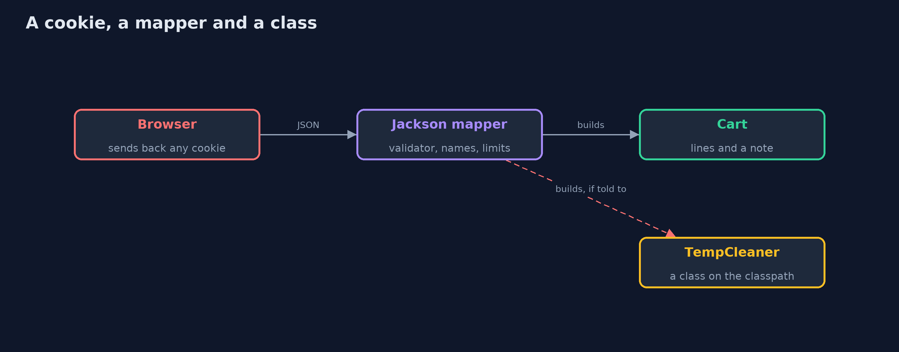
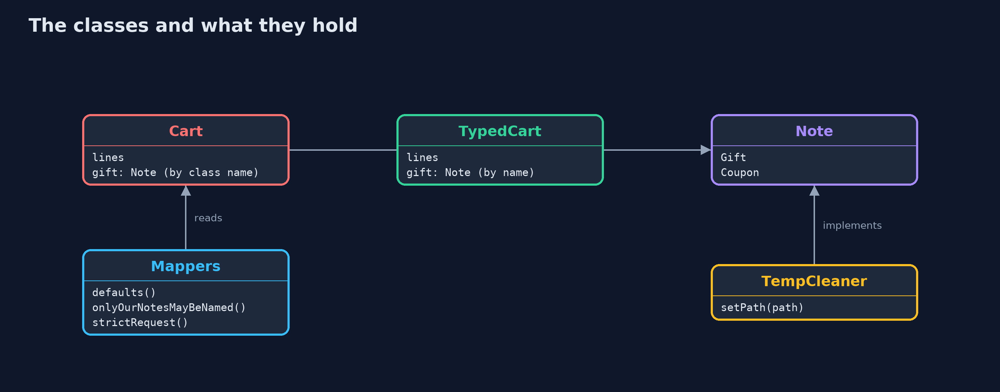
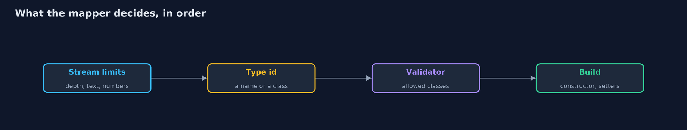
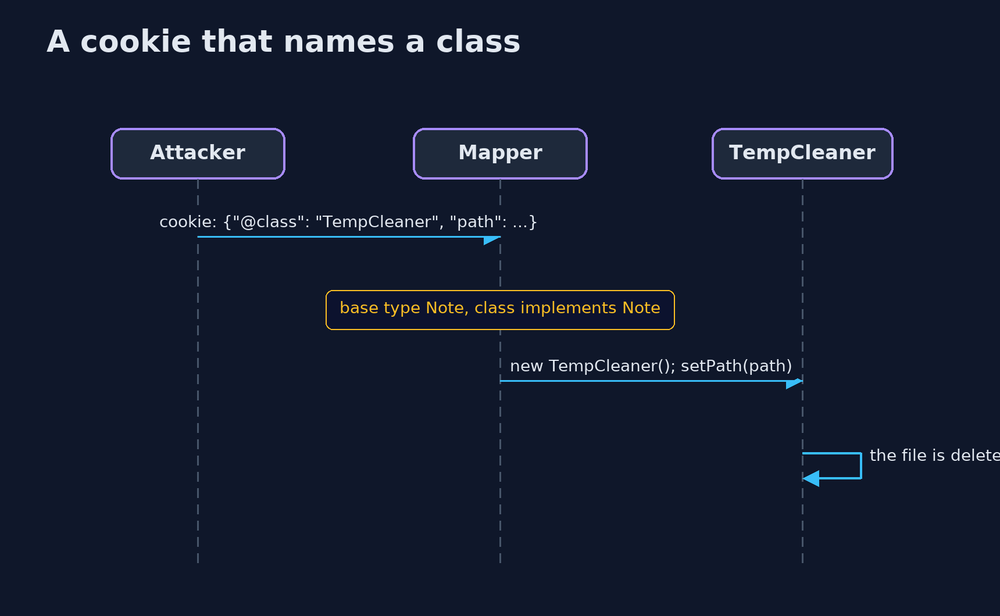

Insecure Deserialization with Jackson
src/main/java/com/jk/explore/security/jacksondeser/
├── Attacker.java The cookies an attacker writes by hand
├── Cart.java The cart as the first version keeps it in a cookie: lines with their prices, and a note whose kind is a class name
├── Catalogue.java The shop's own prices, which are the only ones that count
├── Cookies.java Writes and reads a cart cookie: URL-safe Base64 of JSON
├── JacksonDemo.java Runs the shopping cart cookie story with Jackson 3 in five numbered acts and prints exact, repeatable results
├── Line.java One line of a cart: what, how many, and what the cookie says it costs
├── LooseCart.java The same idea with the laziest possible type: an Object
├── Mappers.java The ways the shop configures Jackson in this lesson
├── Note.java A note on a cart
├── OrderRequest.java What the customer may say about a cart: what and how many
├── Refused.java The cookie was refused, with a short reason that is the same on every run
├── TempCleaner.java A harmless stand-in for a gadget: a class that is already on the classpath (here a note from another team's plug-in, in real life a library's class) and does something as a side effect of being built from data
└── TypedCart.java The same cookie, but the kind of note is a short name from a list kept here, never a class name from the cookie
Jackson 3 reads JSON into objects, and when a field is typed by a class name taken from the data, whoever writes the cookie chooses which class is built; Jackson refuses an Object base type by default, but any other interface, or a global default-typing switch, lets a gadget class run, so the fix is a short list of names, a validator that lists classes, or data-only requests.
The plain insecure-deserialization project breaks Java's built-in serialization. This one breaks and fixes the format most Java services use today: JSON with Jackson 3 (tools.jackson, version 3.1.5). The cart cookie is JSON, and the attack is the same idea: the cookie decides which class the server builds.
What it shows:
- A note typed by class name (@JsonTypeInfo(use = CLASS)) lets the cookie name any class that implements the note interface. A TempCleaner class on the classpath, from another team's plug-in, removes a file as a side effect of being built, and the cart never notices.
- Jackson 3's default validator refuses an Object base type for class names, which is a real protection. It does not refuse an ordinary interface, and the one-line global default typing with a permissive validator ("make polymorphism just work") builds anything.
- Three fixes: type ids by short name from a list on the field, a PolymorphicTypeValidator that lists the allowed classes, or no types in the data at all. Names and the validator stop the gadget, but a forged price in the cookie is still accepted.
- Data only, priced by the shop: a request of product codes and quantities refuses an unknown property (a price, a class name), and the shop prices the order from its own catalogue.
- Limits on the stream: nesting depth, string length and number length are bounded.
Maps to: OWASP Top 10 (2025) A08 Software or Data Integrity Failures · CWE-502 · CWE-915 · OWASP ASVS 5.0 V1 · OWASP Deserialization Cheat Sheet.
The idea in everyday terms
A kitchen that takes written orders. If the order slip can say "make this dish using that appliance" and the kitchen does so for any appliance in the building, a customer can ask for the one that wipes the freezer. If the slip may only name a dish from the menu, the appliance is never the customer's choice.
The scenario
An online store keeps the shopping cart in a JSON cookie. The demo builds the honest cart, then writes forged cookies by hand, as a browser's owner could, and reads them with differently configured Jackson mappers.
Run
./gradlew run
The demo tells the story in 5 acts, each printing exact numbers that the tests check:
| Act | What it shows |
|---|---|
| 1. A cart in a cookie | A cart with a note typed by class name round-trips: 2 lines, total 9200 cents. |
| 2. The cookie decides which class is built | Jackson 3 refuses class names for an Object base type, but a cookie can name a TempCleaner for a Note and the marker file is gone, and global default typing builds anything. |
| 3. A list of kinds, or a list of classes | Short names from a list and a validator that lists classes both refuse the gadget and leave the marker file; the forged price is still accepted. |
| 4. Data only, priced by the shop | A request of codes and quantities, with unknown properties refused: a forged price, a class name, a negative quantity and an unknown product are all refused. |
| 5. Limits on the stream | Nesting beyond 500 is refused by default and beyond 10 when tightened; text over 64 characters and numbers over 10 digits are refused. |
Test
./gradlew test
12 tests in DemoRunsTest, JacksonDeserializationTest. Each test that uses a marker file creates and removes its own. The demo prints the same text on every run.
What the simulation got right, and what it left out
Everything is real Jackson 3: the mappers, the type handling, the validator and the stream limits. The gadget is a harmless stand-in that deletes a temporary marker file. Jackson's own messages carry locations, so only fixed reasons are printed.
Technologies and versions
Every version below is pinned in the project's build files and was the latest stable release when the project was built.
| Technology | Version | Used for |
|---|---|---|
| Java | 25 | the language and runtime; a Gradle toolchain finds or downloads the JDK |
| Gradle | 9.8.1 (wrapper) | build and run; nothing to install, the wrapper downloads it |
| tools.jackson.core:jackson-databind | set by the build | library the code uses |
| org.junit.jupiter:junit-jupiter | 6.1.3, set by junit-bom | JUnit 5: the tests (tests only) |
| org.junit.platform:junit-platform-launcher | 6.1.3, set by junit-bom | JUnit platform launcher, which Gradle needs to run the tests (tests only) |
| videokit | repository tool (tools/videokit) |
the narrated video and animation: Piper en_US-amy-medium, speed 0.8, longer pauses (the amy-slow voice) |
Learning Material
| Document | What it is for |
|---|---|
| Problem statement | the situation and what the project must show |
| Prerequisites | what you need to know first |
| Insecure Deserialization with Jackson, explained | the acts in prose |
| Session guide | a one-hour lesson with exercises |
| Animated walkthrough | the acts step by step, narrated |
| Threat model | what is protected, who could harm it, and how, using STRIDE |
| Spec | what this project must be true of |
| Expected output | the golden demo output every test and every port checks against |
The idea in one picture
The mapper is the place where data becomes objects, so it is where the decision is made.

Where each piece sits
A cart has a note, and a note can be any class that implements the interface.

How the data moves
Every step is configuration, and each is a place where a gadget can be stopped.

Who calls whom, in order

Video
video/insecure-deserialization-with-jackson-explained.mp4 (with .m4a audio and .srt subtitles) is built by video/build_video.sh. Rendered media is not committed.
What it costs
- Names and validators must be kept in step with the code, or new kinds of note are refused.
- The default validator is a floor, not a design: an ordinary interface that a gadget implements is still accepted.
- Strict binding refuses clients that send extra fields, which breaks sloppy callers.
- Pricing on the server needs a catalogue lookup for every request.
- Tight stream limits can refuse a large honest request, so measure what honest carts look like.
When this is too much
For a cart, send only codes and quantities and let the server do the rest. Polymorphic types in data that comes from a client are almost never worth it.
Where you have already met this
@JsonTypeInfo(use = JsonTypeInfo.Id.CLASS)in older code.activateDefaultTyping(...)in a copied configuration.- A CVE for a gadget class in a Jackson-using library.
FAIL_ON_UNKNOWN_PROPERTIESin configuration.
Where this sits
This is the tools version of insecure-deserialization, in the web-security module. It keeps the same story, the same TempCleaner stand-in for a gadget and the same marker file.